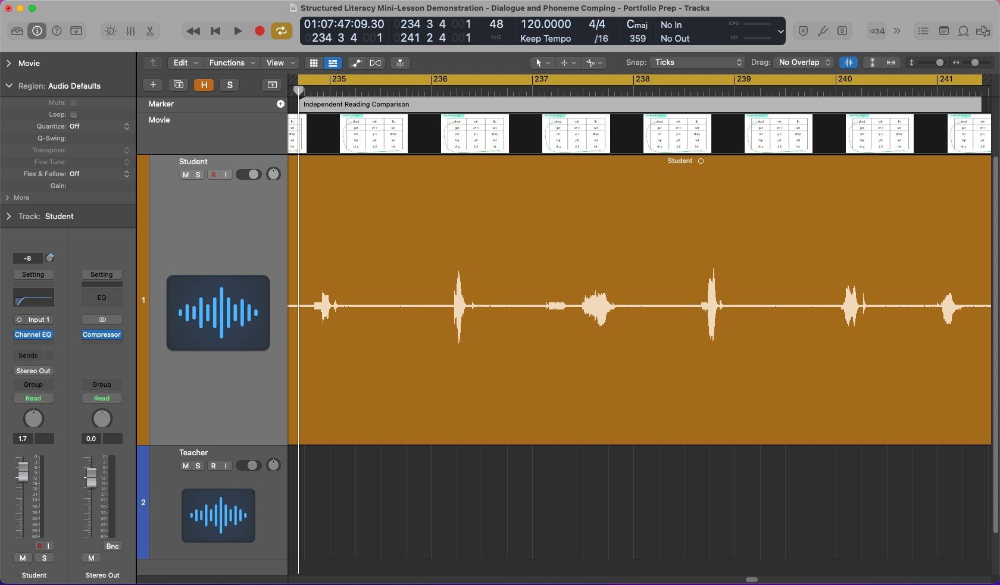
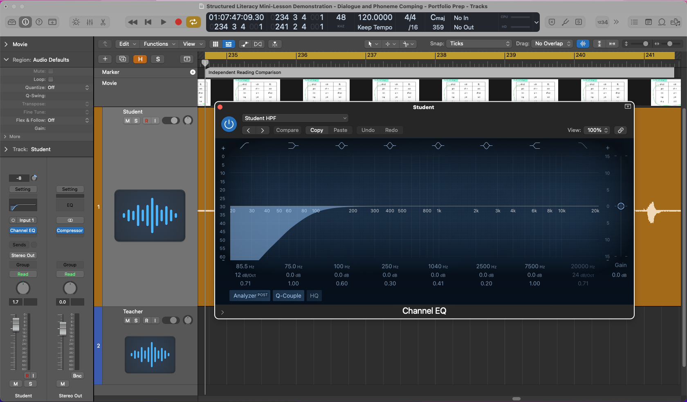
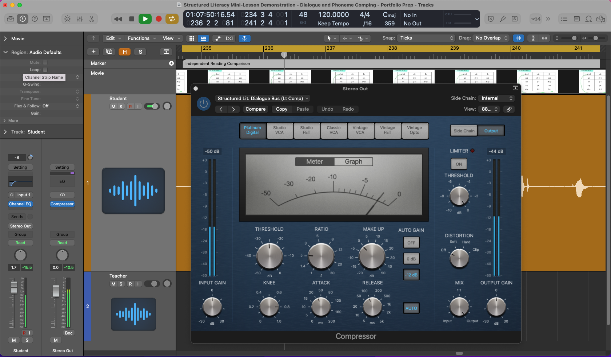
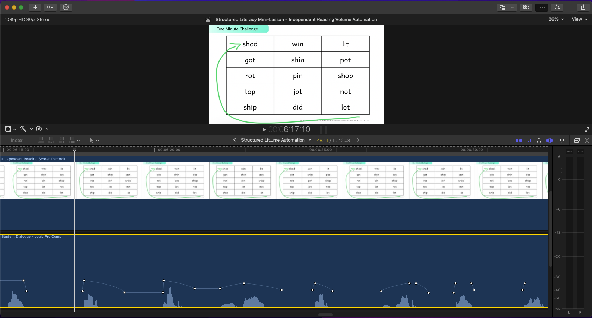

1. Pre-Compression
Comped and high-pass-filtered student dialogue before light bus compression was applied.
Open pre-compression audio fileAn example of dialogue processing, compression trade-offs, and selective volume cleanup within an instructional-media workflow.
ElevenLabs handled the main instructional narration effectively. For the isolated phonemes and tightly controlled word readings used in this portion of the lesson, I used human-recorded dialogue to gain more direct control over pronunciation, timing, and spacing.
The selected excerpt comes from an independent-reading portion of the lesson. The longer pauses between readings provide a useful basis for comparing vocal presence, level consistency, and low-level mouth and room noise across the three stages.
lit · got · shin · pot · rot · pin
The comparison demonstrates two related changes across the same excerpt. The first two files preserve the same comping, timing, fades, and high-pass filtering, with the light bus-compression stage first bypassed and then engaged. The resulting change in level and vocal presence is retained as part of that processing. The third file retains the increased vocal presence and level consistency from the compression stage, then adds localized volume automation in Final Cut Pro.
The post-selective-cleanup file received a uniform level adjustment after export to keep its overall loudness close to the post-compression version. Its internal automation remained unchanged, allowing the cleanup itself to be compared more directly.
Note: All three files use the same independent-reading excerpt.
Comped and high-pass-filtered student dialogue before light bus compression was applied.
Open pre-compression audio fileLight bus compression increased vocal presence and stabilized dialogue levels. The trade-off was that low-level mouth and room noise became more noticeable in the pauses between words.
Open post-compression audio fileThe compressed passage after selected mouth noises between words were reduced using localized volume automation in Final Cut Pro.
Open post-selective-cleanup audio fileThe lesson demonstration’s human-recorded dialogue was recorded and processed in a Logic Pro session with the lesson video present for synchronization. This overview keeps the broader session layout visible while highlighting the independent-reading range, student dialogue channel strip, and waveform detail used for the comparison.

A 12 dB-per-octave high-pass filter at approximately 85 Hz was applied to the student channel to reduce unnecessary low-frequency rumble, while the remainder of the EQ curve was left flat to keep the broader tonal balance largely unchanged.

Light compression on the Logic Pro Stereo Out increased vocal presence and reduced level variation across the short readings. It also made some residual mouth noises in the quieter spaces between words more noticeable on detailed playback.
I retained the compression because its contribution to presence and consistency was useful, then addressed the remaining artifacts selectively after the dialogue was integrated into the finished audiovisual timeline.

After bringing the processed dialogue into Final Cut Pro, I used localized volume keyframes to target individual mouth noises in the pauses between words.
This reduced the most noticeable mouth noises while minimizing shifts in room tone and preserving the adjacent phonemes and words.

Compression improved vocal presence and level consistency, but it also brought low-level mouth and room noise forward. Rather than removing the compression, I addressed those artifacts selectively. The final version keeps the dialogue present and consistent while making the pauses between readings cleaner and less distracting.